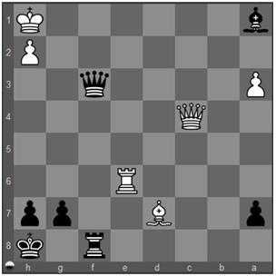

Distração: Você concretiza o tema Distração (Distraction), também chamado de Deflexão ou Diversionismo, quando força o adversário a mover uma peça que estava protegendo uma casa ou peça importante, o que deixa tal peça ou casa desprotegida, de forma que você poderá tomá-la ou ocupá-la. Em uma Distração, a peça adversária é atraída para FORA de uma casa ao invés de ser atraída PARA uma casa, como corre em uma Atração.

1. Rg1 Bd4+
O negro poderia dar mate em "f1" mas a dama branca está guardando essa casa. Dando xeque com seu bispo
2. Dxd4
o negro força sua tomada, distraindo a dama branca da defesa dessa casa
2... Df1#
e o mate sobrevêm. 0-1